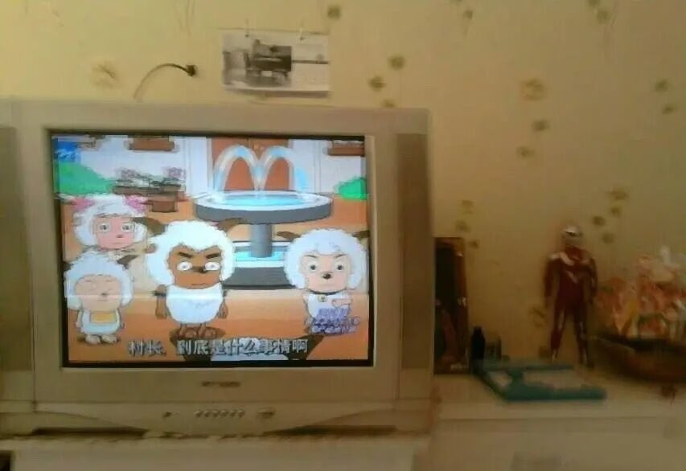

サイバー環状線
@CyberKanjousen
你好。環状線是你，大概六七岁。 你好高啊。怎么知道这么多新鲜的东西！上了酒吧舞？！哇…这么厉害。肯德基也能自己买吗…你是不是小朋友里最强的了？借我手机玩玩…你在说什么，環状線听不懂。環状線觉得你很厉害呀，能走到这么高。環状線从没想过的高度…毕竟对環状線来说，小升初是个模糊的概念 ，中考是个遥远的神话——你怎么长这么大了？ 真的。真的很厉害。幻想中最好的好孩子，有你一半成功吗？你又开始说这些听不懂的话了。你一定是熬夜熬昏头了，爸妈怎么可能让你这么晚睡，睡吧。
